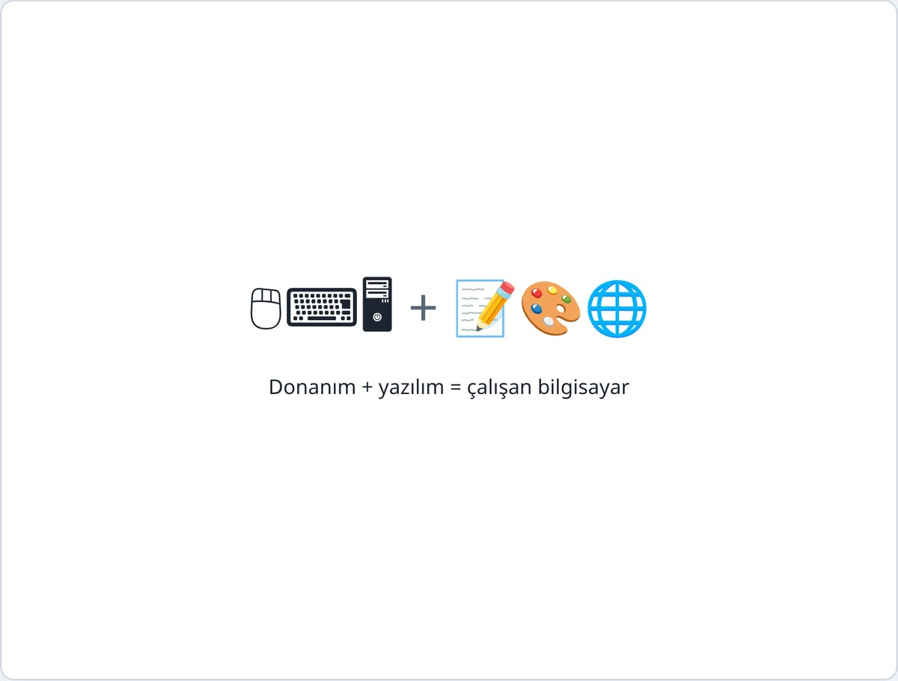
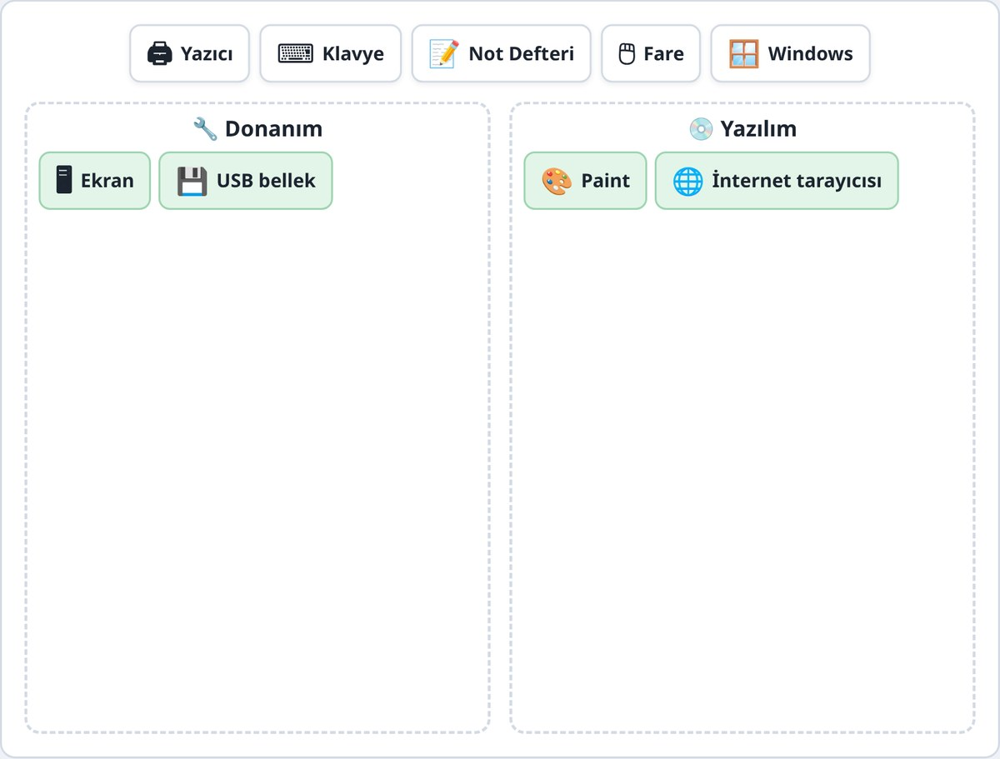
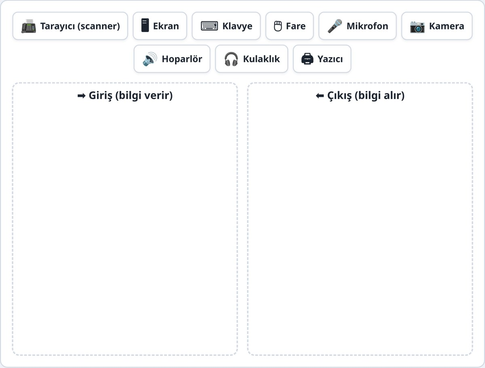
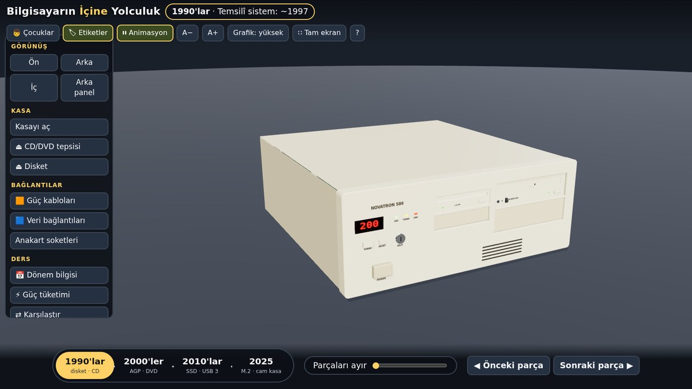
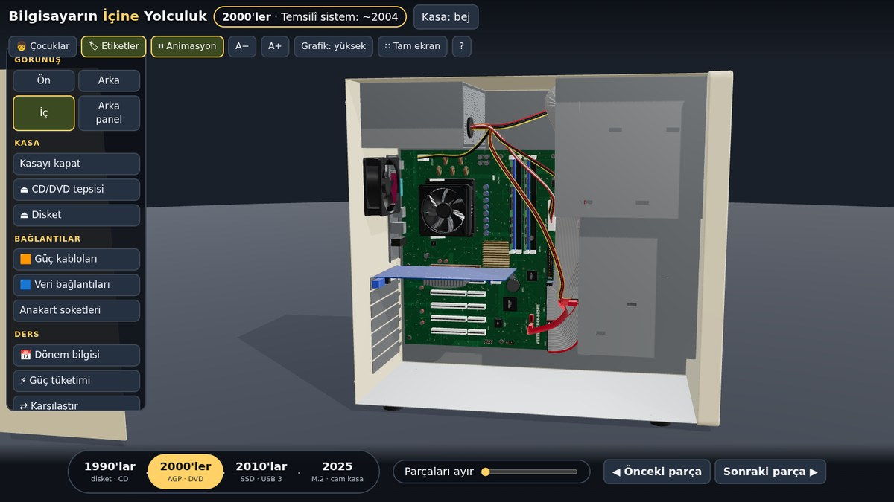
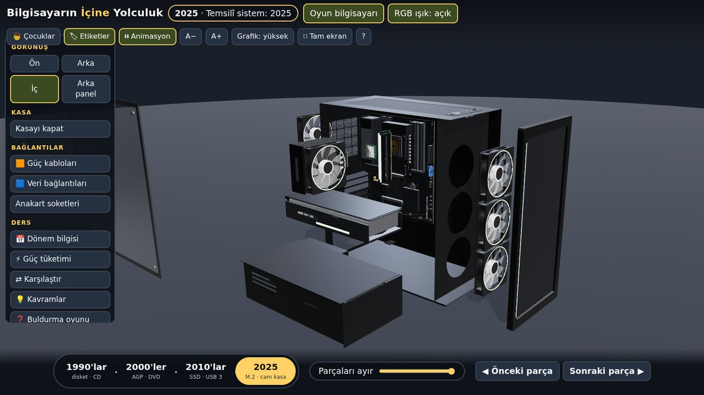

4. Hafta: Donanım ve yazılım
Alıştırmalar ve oyunlar
Bu hafta

Oyun 1
Dikkat: USB bellek donanımdır; içindeki dosyalar ise yazılım/veridir.

Oyun 2
| Giriş | Bilgisayara bilgi verir: klavye, fare, mikrofon, kamera, tarayıcı (scanner) |
|---|---|
| Çıkış | Bilgisayardan bilgi alır: ekran, hoparlör, yazıcı, kulaklık |
Dokunmatik ekran hem giriştir hem çıkış!

Konu
| Disk (HDD / SSD) | Kasanın içinde. Fotoğraf, belge, program kalıcı durur. Dolap gibi. |
|---|---|
| RAM (bellek) | O an açık işler için. Çalışma masası gibi; bilgisayar kapanınca boşalır. Kaydetmediğiniz yazı bu yüzden kaybolur. |
| USB bellek | Cebe sığan, takılıp çıkarılan küçük disk. Cep gibi; dosyaları başka bilgisayara götürür. |
Bilgisayarın İçine Yolculuk



Kasayı açın, parçaları ayırın, bir parçaya tıklayıp “Ne işe yarar? Nereye takılır?” sekmelerini okuyun. Üstten Çocuklar / Gençler (teknik) düzeyi seçilir.
Bilgisayarın İçine Yolculuk
| 1990'lar | 2000'ler | 2010'lar | 2025 | |
|---|---|---|---|---|
| İşlemci | Pentium sınıfı, Socket 7 | Pentium 4 sınıfı, Socket 478 | 4 çekirdek, LGA 1150 | 8 çekirdek, AM5 |
| RAM | 72-pin EDO SIMM | DDR-400 | DDR3-1600 | DDR5-6000 |
| Depolama | IDE HDD, disket, CD-ROM | SATA HDD, disket, DVD | SATA SSD, HDD, DVD | M.2 NVMe |
| Güç kaynağı | 200 W | 350 W | 500 W | 850 W |
Temsilî sistemlerdir; kesin geçiş tarihlerini göstermez. Marka ve model adları uydurmadır.
Bilgisayarın İçine Yolculuk
| Kasayı aç · Parçaları ayır | Kasanın içini ve parçaların katmanlarını gösterir |
|---|---|
| Parçaya tıkla | Ne işe yarar · Nereye takılır · Bu dönemde nasıldı |
| İçini göster | HDD’de plakalar döner, CD/DVD’de lazer kızağı hareket eder |
| Karşılaştır | Eski ve yeni parça cetvel üzerinde gerçek ölçekte yan yana |
| Güç tüketimi | PSU kapasitesi ile anlık tüketim: boşta, ofis, oyun |
| Buldurma oyunu | Etiketler gizlenir, soru sorulur, puan tutulur |
Özet
| Donanım | Elle tutulan parçalar: klavye, fare, ekran, kasa, yazıcı |
|---|---|
| Yazılım | Programlar: Windows, Not Defteri, Paint, tarayıcı |
| Giriş / Çıkış | Bilgisayara bilgi verir / bilgisayardan bilgi alır |
| Depolama | Dosyaların kalıcı durduğu yer: disk, USB bellek |
| RAM | Çalışma masası: bilgisayar kapanınca boşalır |